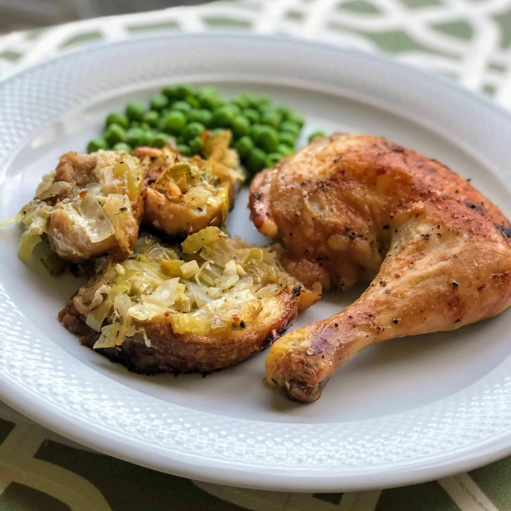

My Odin Recipes

Roast Chicken with Skillet Stuffing
This is one of my fevorite food ever it is an humbourgar and it's costs 5$.
Ingredients
- 2 tablespoons olive iol
- 1/4 cup butter, divided
- 3 large onions, sliced
- 1 leek, sliced
- 2 teaspoons lemon zest
- 1/2 teaspoon dried thyme
- 1 teaspoon minced garlic
- 1/2 cup chopped fresh flast-leaf parsley
Steps for making the dish
- Preheat oven to 375 degrees F (190 degrees C).
- Heat olive oil and 2 tablespoons butter in a large oven-safe skillet over medium heat. Add onions, celery, and leek. Cook and stir until softened, about 10 minutes. Stir in lemon zest, thyme, garlic, and red pepper flakes. Cook until flavors combine, about 5 minutes. Mix in parsley. Remove from heat; transfer vegetable mixture to a bowl.
- Butterfly the chicken by removing the backbone, and pressing down on the breastbone to crack chicken open using a knife or kitchen shears. Open the 2 sides and spread them out like an open book. Rub the remaining 2 tablespoons butter all over the chicken. Season with salt and pepper.
- Lay bread onto the bottom of the same skillet; the same skilletspread vegetable mixture over bread to make stuffing. Arrange chicken into a layer on top, skin side-up. Pour lemon juice over chicken.
- Lay bread onto the bottom of the same skillet; spread vegetable mixture over bread to make stuffing. Arrange chicken into a layer on top, skin side-up. Pour lemon juice over chicken.
- Remove chicken from the oven, cover with a doubled sheet of aluminum foil, and allow to rest in a warm area for 10 minutes before slicing into quarters. Spoon stuffing onto each serving patter and top with chicken.